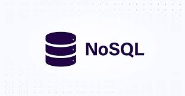

1. Pengantar
Dalam dunia pengembangan aplikasi dan pengelolaan data, database menjadi
komponen paling krusial. Dua jenis database yang paling umum digunakan
adalah SQL (Structured Query Language) dan
NoSQL (Not Only SQL).
Masing-masing memiliki kelebihan, kekurangan, dan kegunaan yang berbeda
tergantung kebutuhan proyek.
SQL bersifat relasional dengan struktur tabel yang ketat, sedangkan
NoSQL lebih fleksibel dan cocok untuk data tidak terstruktur.
2. Apa Itu SQL?

SQL adalah bahasa standar yang digunakan untuk mengelola dan mengakses
data dalam database relasional. Database SQL menyimpan data dalam bentuk
tabel yang memiliki baris dan kolom.
Setiap tabel memiliki skema (struktur) yang ditentukan di awal, sehingga
setiap record harus mengikuti format yang sudah ditentukan.
Contoh Database SQL:
- MySQL
- PostgreSQL
- Microsoft SQL Server
- Oracle Database
- SQLite
SQL sangat cocok untuk aplikasi yang memerlukan transaksi akurat
seperti perbankan, ERP, dan e-commerce.
(Sumber:
mongodb.com)
3. Konsep Dasar SQL
SQL menggunakan tabel dengan relasi antar data (relational database). Konsep dasar:
- Tabel: Menyimpan data dalam baris dan kolom.
- Primary Key: Kolom unik untuk mengidentifikasi setiap record.
- Foreign Key: Menghubungkan tabel satu dengan tabel lain.
- Schema: Struktur database (kolom, tipe data, relasi) yang sudah ditentukan.
Contoh Query SQL:
-- Mengambil semua data dari tabel users
SELECT * FROM users;
-- Menambahkan data baru
INSERT INTO users (name, email) VALUES ('Yogi', '[email protected]');
-- Memperbarui data
UPDATE users SET email = '[email protected]' WHERE id = 1;
-- Menghapus data
DELETE FROM users WHERE id = 1;
4. Apa Itu NoSQL?

NoSQL adalah jenis database yang tidak menggunakan struktur tabel
relasional seperti SQL. NoSQL lebih fleksibel dan mampu menangani data
yang sangat besar, cepat berubah, dan beragam format (semi-structured
atau unstructured).
Jenis-jenis NoSQL:
- Document-based: Menyimpan data dalam format dokumen (JSON/BSON). Contoh: MongoDB, CouchDB.
- Key-Value Store: Data disimpan dalam pasangan key dan value. Contoh: Redis, DynamoDB.
- Column-based: Data disimpan dalam kolom bukan baris. Contoh: Cassandra, HBase.
- Graph-based: Menyimpan data dalam bentuk node dan relasi. Contoh: Neo4j, ArangoDB.
NoSQL ideal untuk aplikasi real-time, media sosial, IoT, dan data
analytics.
(Sumber:
cloud.google.com)
5. ACID vs BASE
Perbedaan mendasar antara SQL dan NoSQL terletak pada prinsip konsistensi datanya:
SQL (ACID)
- Atomicity: Transaksi bersifat "semua atau tidak sama sekali".
- Consistency: Data selalu dalam keadaan valid.
- Isolation: Transaksi berjalan secara terpisah.
- Durability: Data tetap tersimpan meski sistem mati.
NoSQL (BASE)
- Basically Available: Sistem selalu tersedia.
- Soft State: Status data bisa berubah seiring waktu.
- Eventually Consistent: Data akan konsisten pada akhirnya, tidak langsung seketika.
Pilih ACID jika butuh transaksi kritis (keuangan). Pilih BASE jika butuh skalabilitas tinggi (sosial media).
6. Skalabilitas: Vertikal vs Horizontal
SQL umumnya menggunakan skalabilitas vertikal —
artinya, menambah kapasitas hanya dengan memperbesar server (lebih
banyak RAM, CPU lebih cepat).
NoSQL menggunakan skalabilitas horizontal — artinya,
menambah kapasitas dengan menambah lebih banyak server (cluster).
Skalabilitas horizontal lebih fleksibel dan hemat biaya dalam jangka
panjang.
7. Kapan Menggunakan SQL?
- Butuh transaksi kompleks dengan banyak relasi antar tabel.
- Data sudah terstruktur dengan skema tetap.
- Sistem keuangan, e-commerce, ERP.
- Data yang jarang berubah strukturnya.
8. Kapan Menggunakan NoSQL?
- Data tidak terstruktur atau semi-terstruktur.
- Butuh skalabilitas tinggi dan real-time.
- Aplikasi media sosial, IoT, game online.
- Struktur data sering berubah-ubah.
9. Tabel Perbandingan SQL vs NoSQL
| Aspek | SQL | NoSQL |
|---|---|---|
| Struktur | Tabel dengan skema tetap | Dokumen, key-value, column, graph |
| Skalabilitas | Vertikal | Horizontal |
| Konsistensi | ACID (strong consistency) | BASE (eventually consistent) |
| Query | SQL (standar) | Beragam (tergantung database) |
| Contoh Database | MySQL, PostgreSQL, Oracle | MongoDB, Redis, Cassandra |
| Use Case | Fintech, e-commerce, ERP | Media sosial, IoT, analytics |
10. Kesimpulan
SQL dan NoSQL bukanlah musuh —
keduanya saling melengkapi. Pilihan database yang tepat sangat
tergantung pada kebutuhan proyek, skala data, dan jenis transaksi yang
diperlukan.
Banyak perusahaan besar bahkan menggabungkan keduanya dalam sistem
mereka (hybrid approach).
Pahami kebutuhan datamu terlebih dahulu, baru pilih database yang
tepat.